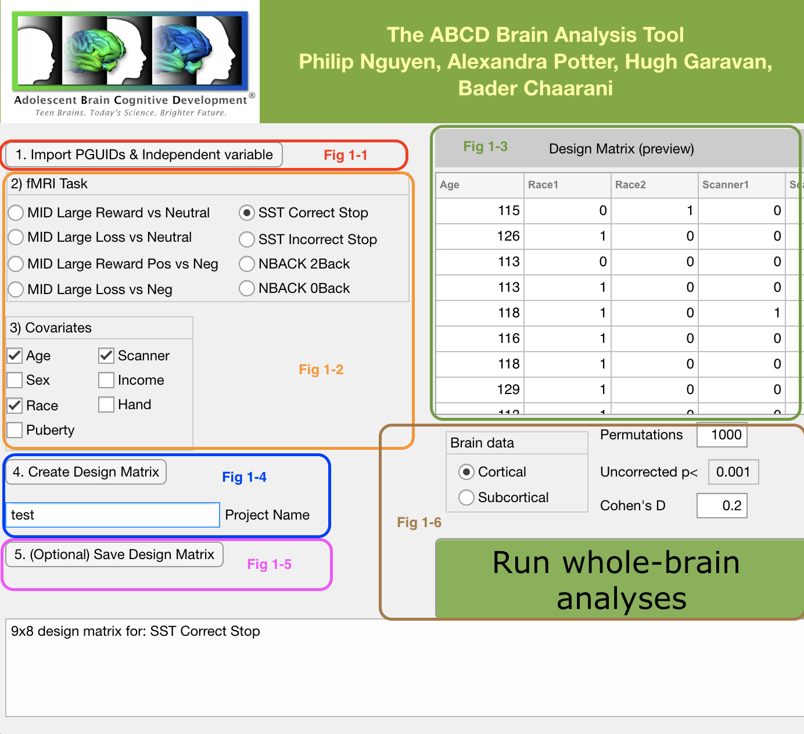
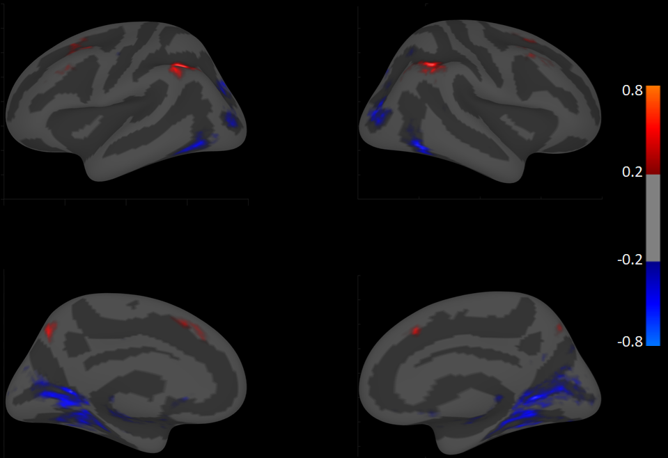

ABCD Brain Analysis Tool
This is the abstract I submitted to OHBM 2020 for the ABCD Brain Analysis Tool. The GUI was built under the guidance of the great Bader Chaarani. We thought about naming it something punny after Bader - i.e. The ABCD BAD Tool - but we couldn’t think of anything appropriate for submission.
Anyways, here’s the abstract:
Authors: Philip Nguyen, Hugh Garavan PhD, Alexandra Potter PhD, Bader Chaarani PhD
Introduction: Given the computational and analytical expertise required to study large MRI datasets such as that generated by the Adolescent Brain Cognitive Development (ABCD) study, we created the ABCD Brain Analysis Tool (BAT) to allow researchers from various academic backgrounds to utilize fMRI data in their research. Here, we introduce a fast and intuitive graphical user interface (GUI) that automates design matrix creation for PALM, parametric and non-parametric analyses, and t-statistic and effect-size map generation using ABCD voxel and vertex data.
Methods: The ABCD imaging and behavioral data were collected from 11,880 9-10 year olds across 21 sites in the United States. Functional MRI data have been optimized, harmonized, and processed for all sites, which include the Monetary Incentive Delay (MID), the Stop Signal (SST), and the Emotional N-Back (N-BACK) tasks. These tasks measure reward processing, response inhibition, and working memory, respectively. The data are provided in the application package as a raw 4-D Matlab matrix.
Matlab’s AppDesigner module was used to create the interface. Users are only required to provide a list of subjects and a measure of interest. The imaging and demographic variables are then matched and subsetted with the user-provided inputs, and a design matrix is created with age, sex, puberty, race, handedness, highest combined income, and site as default covariates. Users can run between-group or regression analyses on voxel and/or vertex data using parametric or non-parametric algorithms. Cohen’s d effect sizes can also be computed for each voxel/vertex as the mean of the fMRI BOLD betas of the contrast divided by the standard deviation of the betas. The computed images are then projected on a Freesurfer or an MNI template.
Results: The BAT’s interface is shown in figure 1. The workflow is as follows: First the user imports a list of subjects and a measure of interest using the “Import PGUIDS & Independent Variable” button (fig. 1-1). Users then select an fMRI contrast and covariates using the available options (fig. 1-2). Afterwards the user generates a design matrix and can preview it by clicking the “Create Design Matrix” button (fig. 1-3 & 1-4). Optionally, the user can save a local copy of the design matrix as a text file (fig. 1-5). The last step involves setting the parameters for the type of analysis the user would like to perform (fig. 1-6). An example output for an analysis comparing the 2-back vs. fixation contrast of the N-Back on the cortical level between males and females is shown in figure 2. Here, Cohen’s d maps are thresholded at ≥ 0.2 where red areas represent bigger BOLD activation in males and blue areas represent bigger BOLD activation in females.


The BAT performed better than manual preparation in terms of data preparation and setting-up design matrices, a nontrivial task in neuroimaging analysis (up to five minutes using the BAT versus thirty minutes or longer via manual preparation). Similarly, since the imaging data are available in the package in a raw format, the BAT performed faster at running permutation analyses compared to standard software. For instance, on the same computer with medium memory and processor specifications, running 1000 permutations on 2000 subjects takes up to thirty minutes using the BAT and more than an hour using standard neuroimaging software such as FSL or PALM.
Conclusion: The ABCD BAT is a simple graphical user interface that enables researchers without expertise in neuroimaging and large data science to prepare, run and visualize whole-brain fMRI analyses automatically. Researchers are able to generate faster results with the BAT than if they had used the standard neuroimaging software that are currently available.